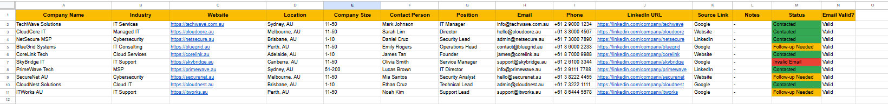

Project Overview
This project demonstrates my ability to conduct structured online research
and systematic data collection for lead generation and business intelligence purposes.
The objective was to gather accurate, relevant, and verifiable information
from multiple online sources and organize them into a clean, structured database.
Operational Problem
Businesses often require updated contact information, company details,
and categorized data for outreach and decision-making. Manual searching
without a structured approach can lead to inconsistent formatting,
duplicate entries, and unreliable data.
Solution
- Conducted targeted online research using advanced search techniques
- Verified company legitimacy and contact information accuracy
- Organized collected data into structured spreadsheet format
- Standardized column headers for consistency (Company Name, Contact Person, Email, Industry, Location, etc.)
- Ensured removal of duplicate and incomplete entries
Process Implementation
- Identified research criteria and data requirements
- Collected data from official websites and credible directories
- Validated contact details and company information
- Maintained clean formatting and structured data organization
- Performed quality checking before final submission
Results & Impact
- Created a reliable and structured lead database
- Improved efficiency of outreach campaigns
- Reduced data inconsistencies and duplication errors
- Delivered organized research output ready for business use
Project Preview
Preview of the structured Online Research & Lead Generation spreadsheet.

View Full Spreadsheet